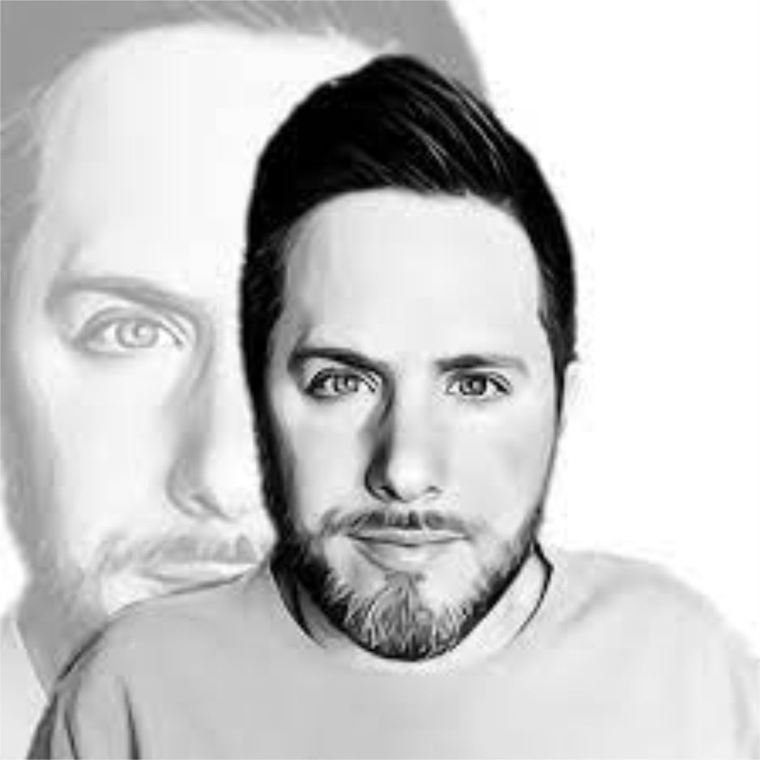

Lançou em 2018 o EP "...no que acreditar?" remixado e lançado com o EP "Daqui
pra sempre" , em 2018-2019 lançou 2 Singles , em 2020 lançou até o momento 3 singles e 2 EPs "Lá vem o Sol"
e "O bastante pra não ser em vão". Nomes como Fernando Anitelli, Pedro Pondé, Bill Reinikova, Danilo Goto,
Ronaldo Rossato, Guto Viegas, Jatobá Beatz, Gustavo Rosseb, Ari Junior, Edu Oliveira, Marcio GordoOnBass
entre muitos outros como Allan Alencar e Victor Simar participaram de suas produções. Dôdi não faz shows ao
vivo desde 2019 devido a sua condição, se dedica a fazer Lives no Youtube e Facebook
